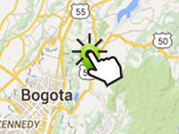

Example of how to create a click event for dynamic markers and markers created by the inspector.
Usage instructions:
Add this script to map GameObject.
Add this script to map GameObject.
MarkerClickExample.cs
/* INFINITY CODE 2013-2016 */
/* http://www.infinity-code.com */
using UnityEngine;
namespace InfinityCode.OnlineMapsExamples
{
[AddComponentMenu("Infinity Code/Online Maps/Examples (API Usage)/MarkerClickExample")]
public class MarkerClickExample : MonoBehaviour
{
private void Start()
{
OnlineMaps api = OnlineMaps.instance;
// Add OnClick events to static markers
foreach (OnlineMapsMarker marker in api.markers)
{
marker.OnClick += OnMarkerClick;
}
// Add OnClick events to dynamic markers
OnlineMapsMarker dynamicMarker = api.AddMarker(Vector2.zero, null, "Dynamic marker");
dynamicMarker.OnClick += OnMarkerClick;
}
private void OnMarkerClick(OnlineMapsMarkerBase marker)
{
// Show in console marker label.
Debug.Log(marker.label);
}
}
}